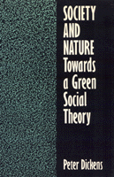

A critical examination of historical and contemporary sociological treatments of relationships between society and nature
A critical examination of historical and contemporary sociological treatments of relationships between society and nature


 A critical examination of historical and contemporary sociological treatments of relationships between society and nature
A critical examination of historical and contemporary sociological treatments of relationships between society and nature

|  |
Society and NatureTowards a Green Social TheoryPeter Dickenspaper EAN: 978-0-87722-969-8 (ISBN: 0-87722-969-4) |
In this wide-ranging effort to theorize about the relationships between society and nature, Peter Dickens attempts to reconstruct social theory in a way that enables it to speak to contemporary environmental issues. After reviewing existing sociological traditions, he draws on the early work of Karl Marx to suggest that processes and relations in the workplace are the main source of people's separation from nature. In addition, people's understanding of "nature" tends to mirror their experience of the social world. Redefining the work of Anthony Giddens in an ecological direction, Dickens analyzes developments in biological thinking that seem consistent with this approach. He considers the role of culture, and he critiques the contemporary "deep green" and "deep ecology" movements.
Focusing on the alienation of human begins from the natural world and the place of nature in their "deep mental structures," the author works in part from a Marxist perspective but draws a wide variety of social psychological, and biological theories into the discussion. Society and Nature not only addresses a central debate in contemporary social science regarding this interrelationship but also responds to the intellectual challenge presented by natural scientific concepts of environmental problems that oversimplify or ignore their political or social relational dimensions.
Acknowledgements
Introduction
1. Science, Social Science, Politics and the Environment: Some Unhelpful Dichotomies
Biological Theory and the Environment •
Social Theory and the Environment •
Conclusion: Towards an Eclectic but Unified Approach •
Notes
2. People, Nature and Social Theory
People and Nature in Early Sociological Theory: Evolutionism as a False Lead •
Tönnies: From Land and Community to Society •
Modernity, Community and Human Nature: The Chicago School of Sociology •
From Biologism to Functionalism •
People and Environment: The Arguments of Later Marxism •
Conclusion: Society, Nature and Social Theory •
Notes
3. ‘Nature as Man’s Inorganic Body’: Marx’s Conceptual Framework
Nature, Alienation and People: The Early Marxian Perspective •
Marxism and the Environment: Continuing Developments and Debates •
Marx and Engels on People and Nature: An Assessment and Comparison with Existing Environmental Analysis •
Developing Marx’s Approach •
Notes
4. Arguments within Biology: From Neo-Darwinism to the Study of Organisms and Their Environments
A Methodological Issue •
The Neo-Darwinian Revolution •
Socioecology: Organisms in Ecological Context •
Organism and Environment: The Emergent ‘New Biology’ •
Notes
5. ‘Nature as Alive’: Social Relations and Deep Mental Structures
The Evolution of Mind •
Biology and the Problematic Notion of ‘Culture’ •
The Mind: Eroding the Culture-Nature Distinction •
An Understanding of the Biologically Evolved Mind •
Social Relations and Nature as ‘Alive’ •
Alienation and Fetishisation: Returning to the Yanomami Case Study •
‘Women as Nature’: Consciousness, Natural Differences and Environmentalism •
Notes
6. Spreading ‘Man’s Inorganic Body’: Some Implications
Space, Time and Modernity: Aspects of Giddens’ Account •
Society and Nature: Developing and Using Giddens’ Analysis •
Nature and the Time-Space Distanciation of Social Life •
Time-Space Distanciation Combining with Alienation: The Instance of Food and Health •
Time-Space Distanciation, Consumption and the Reification of ‘Nature’ •
Notes
7. Nature Reified: A Contemporary Case Study
Notes
8. Society and Nature: From Theory to Practice
Realism: Some Areas of Debate •
From Theory to Practice •
Notes
Epilogue
Index
Peter Dickens is Senior Lecturer in Urban Studies and Social Policy at the University of Sussex (UK) and the author of Urban Sociology: Society, Locality and Human Nature.
Nature and the Environment
Sociology
© 2015 Temple University. All Rights Reserved. This page: http://www.temple.edu/tempress/titles/955_reg.html.